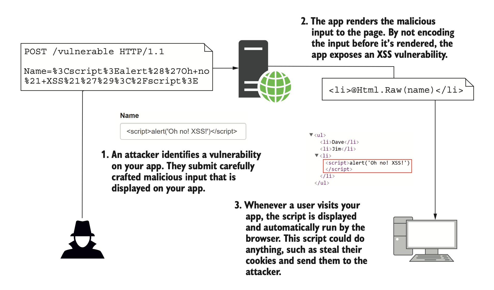
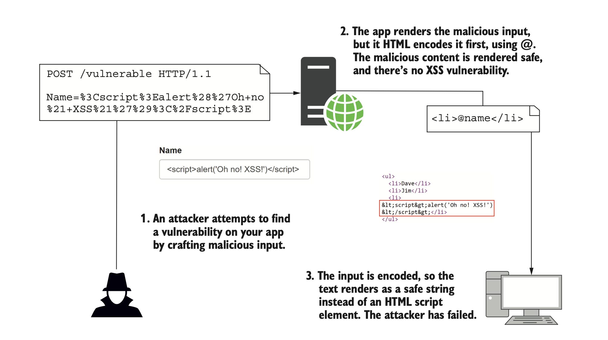
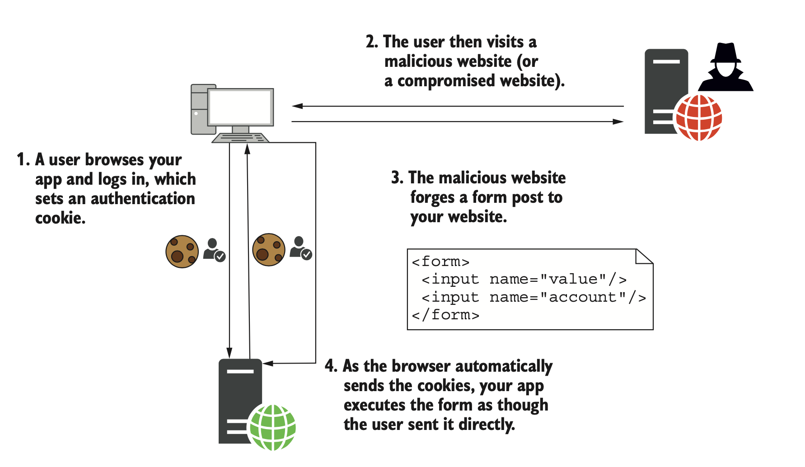
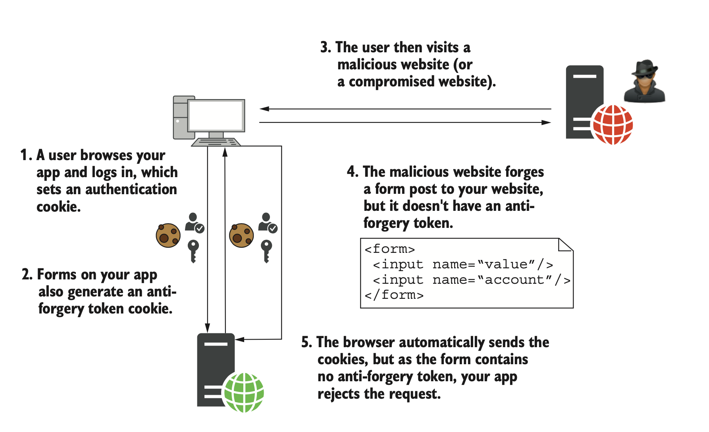

Improving application security
Lesson 11
SW4BED-01
Agenda
- Encrypting traffic using HTTPS
- Defending against cross-site scripting attacks (XSS)
- Protecting from cross-site request forgery attacks (CSRF)
- Allowing calls from other origins using Cross-origin Resource Sharing (CORS)
- Other attack vectors
Introduction
- Web application security is a hot topic at the moment
- The digital transformation are putting our data in the cloud
- A rise in cyber-related crime
- We should know the different attack vectors
- So we can defend against them
- So we do not introduce vulnerabilities in our applications
- We will look at security from an ASP.NET Core point-of-view
- But everything is applicable to other technology stacks
Encrypting traffic using HTTPS
Why HTTPS?
- We need HTTPS for three reasons:
- Privacy Prevent bad actors from eavesdropping
- Integrity Prevent bad actors to modify the message
- Identification Guarantee the identity of the sender
Overview
- HTTP requests are unencrypted by default
- They are plaintext files sent over the network
- Transport Layer Security (TLS) is a cryptographic protocol used to encrypt communication
- Two approaches
- Directly in the application
- TLS-offloading with reverse proxy (Transport Layer Security)
- Security headers
- HTTP redirection
Public key cryptography
- A key pair consists of two parts:
- A public key, that anyone can see
- A private key, that only the server can see
- Data encrypted with the public key can only be decrypted with the private key
- TLS handshake
- Client/server key exchange and verification
- Master secret
- Data transmission
Certificate authorities
- Certificate authorities (CAs) are special trusted entities, and browsers are hardcoded to trust certain root certificates
- ASP.NET Core uses development certificates for development
- Not trusted by default
- You must explicitly trust development certificates
- Cannot be used in production environments (Let's Encrypt, Azure, AWS, Cloudflare, etc.)
HTTPS with Docker
Docker
- You could just copy the certificate into container images, but it has some disadvantages:
- It makes difficult to use the same image for testing with developer certificates
- It makes difficult to use the same image for hosting with production certificates
- There is significant risk of certificate disclosure
- When instatiating a container, use the following configuration
-p 8000:80-p 8001:443-e ASPNETCORE_URLS="https://+;http://+"-e ASPNETCORE_HTTPS_PORT=8001-e ASPNETCORE_Kestrel__Certificates__Default__Password="password"-e ASPNETCORE_Kestrel__Certificates__Default__Path=/https/aspnetapp.pfx-v ${HOME}/.aspnet/https:/https/
Docker compose
Cross-origin resource sharing (CORS)
Overview
- Allows browser applications to make requests from one domain to another
- This is prevented by the Same-origin policy by default
- The need to make cross-origin requests has become common with client-side single-page applications (SPAs)
Same-origin policy
- Two URLs have the same origin if they have identical schemes, hosts, and ports
- These two URLs have the same origin
https://example.com/foo.htmlhttps://example.com/bar.html
- These URLs have different origins than the previous two URLs
https://example.net—Different domainhttps://www.example.com/foo.html—Different subdomainhttp://example.com/foo.html—Different schemehttps://example.com:9000/foo.html—Different port
- Defined in RFC 6454
Cross-origin resource sharing
- World Wide Web Consortium (W3C) standard that allows a server to relax the same-origin policy
- Is not a security feature, CORS relaxes security.
- APIs is not safer by allowing cross-origin requests
- APIs is not vulnerable by allowing cross-origin requests
- Allows a server to explicitly allow some (or all) cross-origin requests, while rejecting others
Pre-flight

Enabling CORS
- There are three different ways to enable CORS in a .NET application:
- Middleware
- Apply default and named policies to all endpoints
- Endpoint routing
- Apply policies on a per-endpoint basis
- Does not support automatic pre-flight requests
- Attributes
- Apply named policies for selected endpoints
- Different policies can be applied to controllers, page models, or action methods
- Middleware
Middleware
Policies
Controller
Wrap-up
- The API (server) need to configure CORS policies
- Not the application (client) making the request
- Be very careful when defining policies
- Only allow what is needed and nothing more
- The order in which the CORS middleware is added to the pipeline is important
- It should be after
UseRouting()and beforeUseEndpoints()
- It should be after
Protecting against Cross-site scripting (XSS)
Overview
- A security vulnerability that enables bad actors to place client-side scripts into web pages
- When the page loads, the script could
- Steal cookies and session tokens
- Manipulate the DOM
- Redirect to a malicious site
- Generally occurs when an application takes user input and outputs it to a page without validation
Protection against XSS
- Treat any (user) input as untrusted
- Use proper encoding and sanitize user input
- Luckily, ASP.NET Core provides default protection
XSS - Vulnerable
 ASP.NET Core in Action, 2nd edition (ISBN 9781617298301), pp. 585XSS - Protected
 ASP.NET Core in Action, 2nd edition (ISBN 9781617298301), pp. 586Protecting against Cross-site request forgery (CSRF)
Overview
- CSRF involves a malicious website making authenticated requests to an API on behalf of user
- Browsers sends cookies automatically on
GETandPOSTrequests
- Browsers sends cookies automatically on
- Can be a problem for websites or APIs that use cookies for authentication
Protecting against CSRF
- Anti-forgery tokens are added to forms
- Tokens are stored in a cookie
- Generated at runtime
- Based on session information
Should be used for - ASP.NET Core automatically adds anti-forgery to forms
- Razor pages automatically validates them
- MVC controllers does NOT (should be decorated with the
[ValidateAntiForgeryToken]attribute)
POST, DELETE and other request types that mutate state
CSRF - Vulnerable
 ASP.NET Core in Action, 2nd edition (ISBN 9781617298301), p. 589CSRF - Protected
 ASP.NET Core in Action, 2nd edition (ISBN 9781617298301), p. 590Other attack vectors
Overview
- Open redirect attacks
- SQL injections
- Protecting object references
- Protecting usernames and passwords
Open redirect attacks
- The user clicks a link in a safe application and get redirected to a malicious site
- The
returnUrlis typically parsed as a query string in the request
- The
- Mitigation
- Validate the redirect URL (
returnUrl) before the redirection
- Validate the redirect URL (
- ASP.NET Core has built-in helper methods
- Identity validates
returnUrlby default IsLocalUrl()is available fromIUrlHelperLocalRedirect()onControllerBasethrows an exception in the provided URL is not local
- Identity validates
SQL injection
- Bad actors crafts malicious input that is processed to a vulnerable application
- Submitted through a form
- Passed in the URL as a query string
- Exposes data stored in the database
- Mitigation
- Use a Entity Framework Core (or any other ORM)
- Use parameterized queries
- Do not concatenate user input into crafted queries
- Be very careful if using
FromSqlRaw()
Direct object referencing
- A bad actor can access "hidden" data by guessing the object references
- What comes after
/Recipes/Edit/120?
- What comes after
- Mitigation
- Use resource-based authorization
- Can be sidestepped with pseudo-random generated IDs (but why not do it right from the start?)
User data
Do not store data that is not needed
🤷♂️
Wrap-up
- Encrypting traffic with HTTPS
- HTTPS, TLS, and certificates
- Setting up HTTPS with Docker
- Protecting against XSS and XSRF
- Configuring CORS in ASP.NET Core
- Other attack vectors